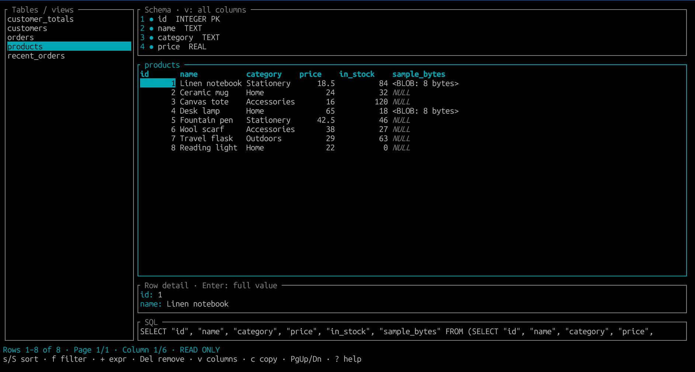

SQLite terminal explorer
Browse SQLite tables and views from your terminal with sortable columns, LIKE filters, row detail, JSON cell rendering, and custom SQL expressions. Built in Rust with Ratatui. Databases are opened read-only.
# From a checkout (Rust 1.88+ and a C compiler)
cargo install --path . --locked
sqlens path/to/database.sqlite